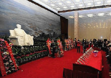

Tiananmen Square - Chairman Mao Zedong Memorial Hall - National Museum of China One Day Tour
Tiananmen Square
Tiananmen Square is located in the centre of Beijing, the capital of the People's Republic of China and along Chang'an Street with the Monument to the People's Heroes, the Memorial Hall of Chairman Mao, the Great Hall of the People and the National Museum of China. The main attractions of the square are the Golden Water Bridge, the Huabiao and Tiananmen Square.天安门广场位于北京市中心，南北长880米，东西宽500米，面积达44万平方米，是当今世界上最大的城中广场。
-
 Tiananmen Building
Tiananmen Building
-
 Tiananmen Square
Tiananmen Square
- Huabiao
Chairman Mao Zedong Memorial Hall & National Museum of China
Located in Tiananmen Square, the Hall of the Chairman covers an area of 5.72 hectares, with a total construction area of 33,867 square metres. The main building is a colonnaded square, with a Chinese white jade plaque engraved with the words "Chairman Mao Memorial Hall" on the north and south fronts. 44 square granite pillars surround the outer corridor, which is majestic and solemn. The National Museum of China, located on the east side of Tiananmen Square in the centre of Beijing, south of East Chang'an Street, is laid out opposite to the Great Hall of the People and is based on the former Chinese History Museum and the former Chinese Revolutionary Museum. Collecting, archaeology, collecting, researching and displaying cultural relics, it will systematically collect precious cultural relics reflecting the ancient, modern and contemporary history of China.
- 
 330445074@qq.com
330445074@qq.com